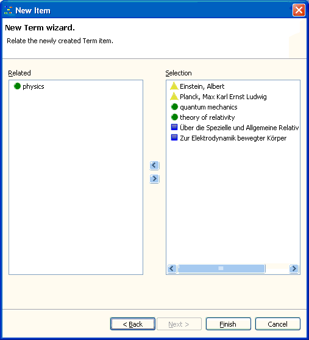

In the process of item creation you have the possibility to relate a newly created item with existing items. The wizard's last page displays the list of existing items on the right (the Selection list) and the already related items on the left (in the Related list).

By default, the newly created item is already related with the selected item in the relations browser.
To change the item's relations on this wizard page, you first have to make a selection using your mouse or the keyboard. Having such a selection, you have several possibilities to proceed further:
Ctrl+R to add the selection from the Selection list or
Ctrl+D to remove the selection from the Related list.